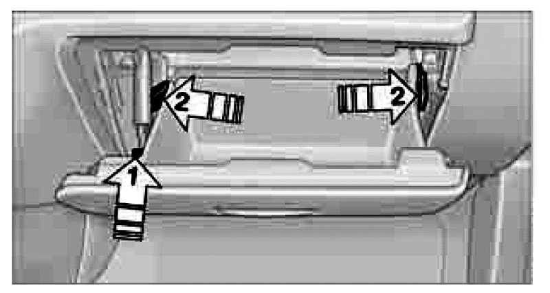

Fuse Box Locations
Fuse Box Locations
The fuse box is located inside the glove compartment, behind the access cover.
Acessing the fuse box:
1. Open the glove compartment.
2. Remove the damper, arrow 1, from the lower holder by applying forward pressure.
3. Disengage the glove compartment by pressing on both tabs, arrows 2, and fold it down.
Spare fuses and a pair of plastic forceps are set in holders on the distributor box.
Information on fuse assignments can be found next to the distributor box.
After replacing a fuse, press the glove compartment upward until it engages and reattach the damper.